MAXimal
добавлено: 10 Sep 2010 16:13
редактировано: 3 May 2012 1:35
Содержание [скрыть]
Кратчайшие пути фиксированной длины, количества путей фиксированной длины
Ниже описываются решения этих двух задач, построенные на одной и той же идее: сведение задачи к возведению матрицы в степень (с обычной операцией умножения, и с модифицированной).
Количество путей фиксированной длины
Пусть задан ориентированный невзвешенный граф  с
с  вершинами, и задано целое число
вершинами, и задано целое число  . Требуется для каждой пары вершин
. Требуется для каждой пары вершин  и
и  найти количество путей между этими вершинами, состоящих ровно из рёбер. Пути при этом рассматриваются произвольные, не обязательно простые (т.е. вершины могут повторяться сколько угодно раз).
найти количество путей между этими вершинами, состоящих ровно из рёбер. Пути при этом рассматриваются произвольные, не обязательно простые (т.е. вершины могут повторяться сколько угодно раз).
Будем считать, что граф задан матрицей смежности, т.е. матрицей 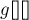 размера  , где каждый элемент 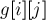 равен единице, если между этими вершинами есть ребро, и нулю, если ребра нет. Описываемый ниже алгоритм работает и в случае наличия кратных рёбер: если между какими-то вершинами и есть сразу
, где каждый элемент 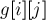 равен единице, если между этими вершинами есть ребро, и нулю, если ребра нет. Описываемый ниже алгоритм работает и в случае наличия кратных рёбер: если между какими-то вершинами и есть сразу  рёбер, то в матрицу смежности следует записать это число . Также алгоритм корректно учитывает петли в графе, если таковые имеются.
рёбер, то в матрицу смежности следует записать это число . Также алгоритм корректно учитывает петли в графе, если таковые имеются.
Очевидно, что в таком виде матрица смежности графа является ответом на задачу при 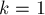 — она содержит количества путей длины  между каждой парой вершин.
между каждой парой вершин.
Решение будем строить итеративно: пусть ответ для некоторого найден, покажем, как построить его для 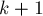. Обозначим через 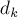 найденную матрицу ответов для , а через 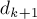 — матрицу ответов, которую необходимо построить. Тогда очевидна следующая формула:
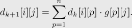
Легко заметить, что записанная выше формула — не что иное, как произведение двух матриц и  в самом обычном смысле:
в самом обычном смысле:
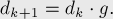
Таким образом, решение этой задачи можно представить следующим образом:
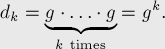
Осталось заметить, что возведение матрицы в степень можно произвести эффективно с помощью алгоритма Бинарного возведения в степень.
Итак, полученное решение имеет асимптотику 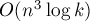 и заключается в бинарном возведении в -ую степень матрицы смежности графа.
Кратчайшие пути фиксированной длины
Пусть задан ориентированный взвешенный граф с вершинами, и задано целое число . Требуется для каждой пары вершин и найти длину кратчайшего пути между этими вершинами, состоящего ровно из рёбер.
Будем считать, что граф задан матрицей смежности, т.е. матрицей размера , где каждый элемент содержит длину ребра из вершины в вершину . Если между какими-то вершинами ребра нет, то соответствующий элемент матрицы считаем равным бесконечности  .
.
Очевидно, что в таком виде матрица смежности графа является ответом на задачу при — она содержит длины кратчайших путей между каждой парой вершин, или , если пути длины не существует.
Решение будем строить итеративно: пусть ответ для некоторого найден, покажем, как построить его для . Обозначим через найденную матрицу ответов для , а через — матрицу ответов, которую необходимо построить. Тогда очевидна следующая формула:
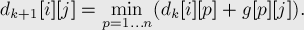
Внимательно посмотрев на эту формулу, легко провести аналогию с матричным умножением: фактически, матрица умножается на матрицу , только в операции умножения вместо суммы по всем 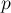 берётся минимум по всем :
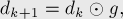
где операция умножения двух матриц определяется следующим образом:
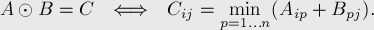
Таким образом, решение этой задачи можно представить с помощью этой операции умножения следующим образом:
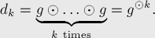
Осталось заметить, что возведение в степень с этой операцией умножения можно произвести эффективно с помощью алгоритма Бинарного возведения в степень, поскольку единственное требуемое для него свойство — ассоциативность операции умножения — очевидно, имеется.
Итак, полученное решение имеет асимптотику и заключается в бинарном возведении в -ую степень матрицы смежности графа с изменённой операцией умножения матриц.
Обобщение на случай, когда требуются пути длины, не более чем заданная длина
Описанные выше решения решают задачи, когда требуется рассматривать пути определённой, фиксированной длины. Однако эти же решения можно приспособить и для решения задач, когда требуется рассматривать пути, содержащие не более чем заданное число рёбер.
Сделать это можно, немного модифицировав входной граф. Например, если нас интересуют только пути, заканчивающиеся в определённой вершине  , то в граф можно добавить петлю 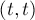 нулевого веса.
, то в граф можно добавить петлю 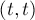 нулевого веса.
Если же нас по-прежнему интересуют ответы для всех пар вершин, то простое добавление петель ко всем вершинам испортит ответ. Вместо этого можно раздвоить каждую вершину: для каждой вершины  создать дополнительную вершину 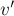, провести ребро 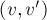 и добавить петлю 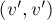.
создать дополнительную вершину 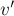, провести ребро 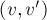 и добавить петлю 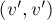.
Решив на модифицированном графе задачу о поиске путей фиксированной длины, ответы на исходную задачу будут получаться как ответы между вершинами и 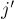 (т.е. дополнительные вершины — это вершины-окончания, в которых мы можем "покрутиться" нужное число раз).